Genetic Association Study of grey matter network dysfunction in Alzheimer's disease Continuum
Alireza Fathian |
November, 2021
1. Research Questions
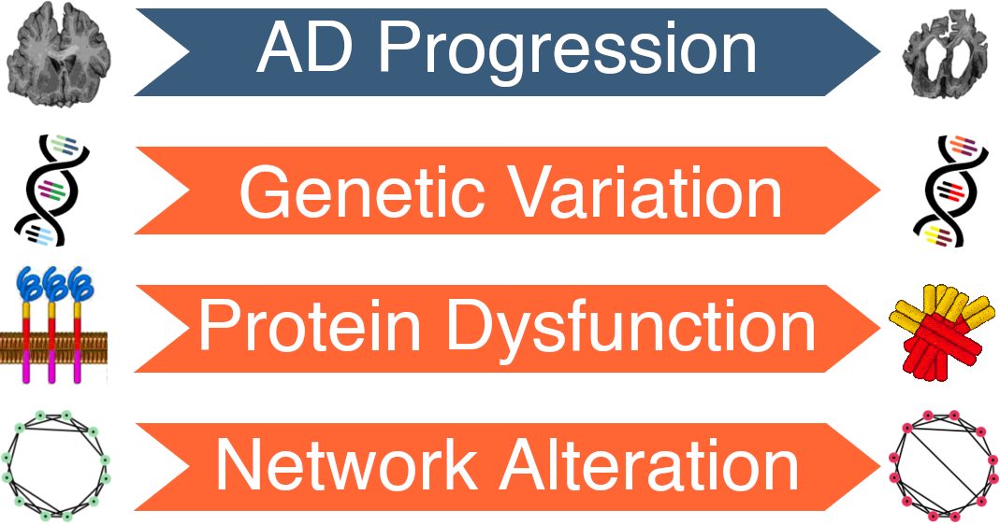
How are these factors correlated?
How can we design an effective analysis pipeline for characterizing AD that capture both neuroimaging and genetic data?
How can these methods help us understanding the disease mechanism?
2. Methodology
2.1. Brain Connectivity Networks
Modeling brain connectivity networks
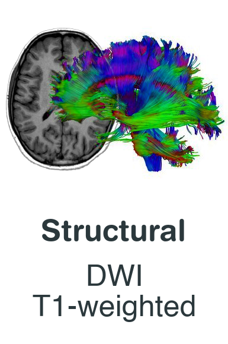
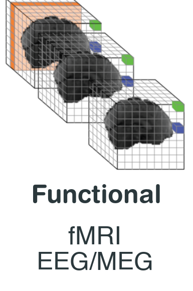
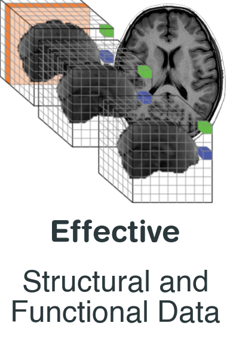
2.1. Brain Connectivity Networks
Example: Modeling functional connectivity network using fMRI and t1w
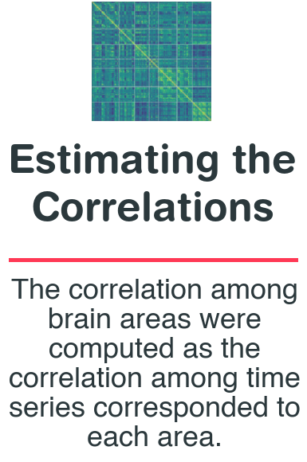
2.1. Brain Connectivity Networks
The trend of brain network disruptions
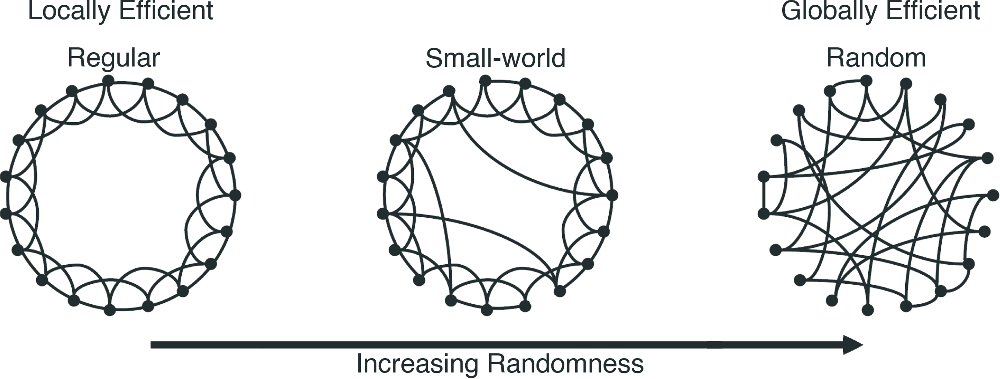
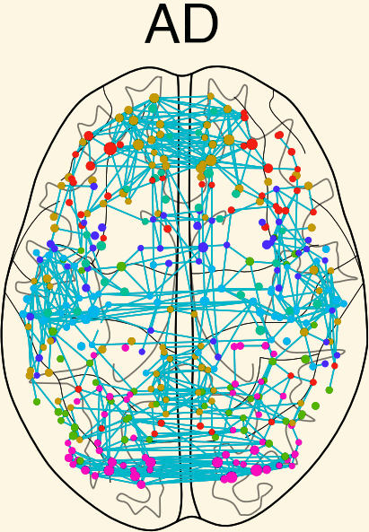
2.2 Genome-Wide Association Study (GWAS)
GWAS analysis can be used to detect associations between genetic variants and AD.
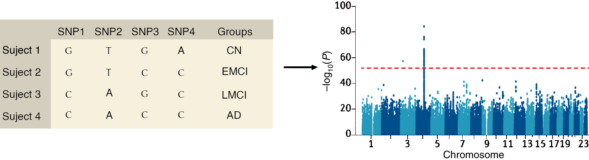
2.3. Combining Neuroimaging and Genetic Data
First Approach
Second Approach
3. Fictive Results and Conclusion
3.1. Fictive Results of the First Approach
Network alteration in AD Progression: 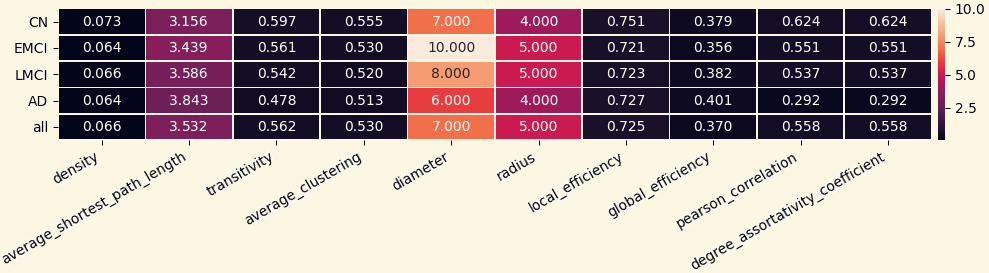 Clustering Coefficient, Average Shortest Path Length, and Assortativity are higly involved.
3.1. Fictive Results of the First Approach
GWAS analysis of connectivity metrics: 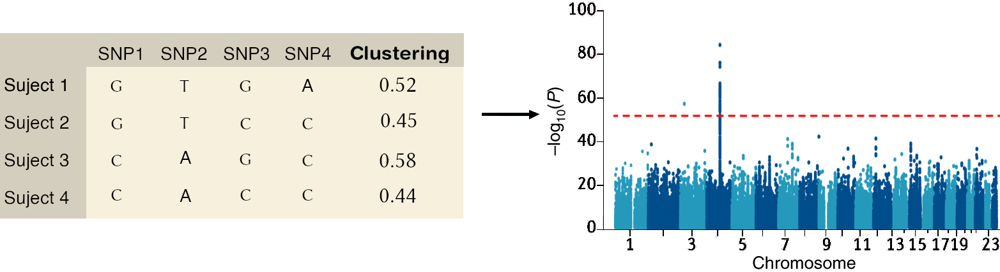
3.1. Fictive Results of the First Approach
Signifcant associations between SNPs and network metrics.
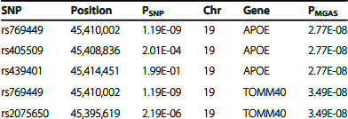
3.1. Fictive Results of the First Approach
The pathway of significant genes: 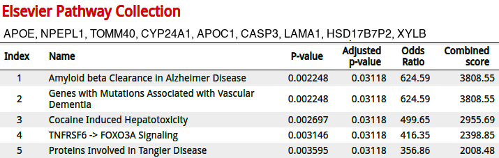
3.2 Summery of Pipeline
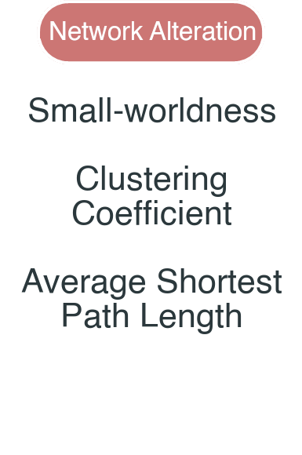
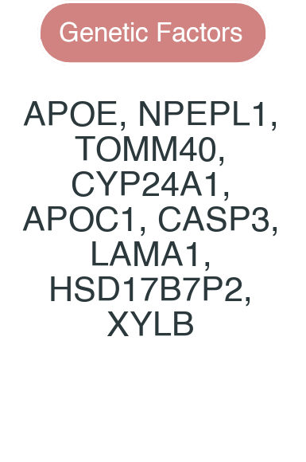
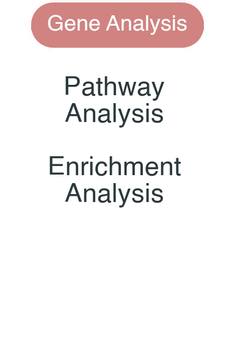
Thank You!